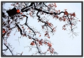

halflife1272014-06-26 16:224.42 分
操作性 4.50耐用性 4.50性价比 4.50解像力 4.00色彩还原 5.00机械结构 4.00
pjch2014-06-07 13:024.67 分
操作性 4.50耐用性 5.00性价比 5.00解像力 4.50色彩还原 4.50机械结构 4.50
2ryan2014-05-24 11:264.25 分
操作性 4.00耐用性 4.50性价比 4.00解像力 4.00色彩还原 4.50机械结构 4.50
我是大漠2014-03-06 08:34
张友宣2014-02-21 00:324.83 分
操作性 5.00耐用性 5.00性价比 5.00解像力 4.50色彩还原 4.50机械结构 5.00
gxnnrxm2014-01-12 22:584.58 分
操作性 4.50耐用性 4.50性价比 5.00解像力 5.00色彩还原 4.50机械结构 4.00
eos_yu2013-10-21 12:314.92 分
操作性 5.00耐用性 5.00性价比 5.00解像力 4.50色彩还原 5.00机械结构 5.00
hzj20022013-10-15 12:474.42 分
操作性 4.50耐用性 4.50性价比 4.50解像力 4.00色彩还原 4.50机械结构 4.50
daya2013-10-08 15:244.67 分
操作性 4.50耐用性 4.50性价比 5.00解像力 4.50色彩还原 5.00机械结构 4.50
哆啦A多2013-10-03 07:524.42 分
操作性 4.00耐用性 5.00性价比 4.50解像力 4.00色彩还原 4.00机械结构 5.00
Living2013-09-16 10:584.17 分
操作性 4.50耐用性 3.50性价比 5.00解像力 3.50色彩还原 4.00机械结构 4.50
光速飞龙2013-05-16 07:524.92 分
操作性 5.00耐用性 5.00性价比 5.00解像力 4.50色彩还原 5.00机械结构 5.00
行摄从容2013-02-14 11:565 分
操作性 5.00耐用性 5.00性价比 5.00解像力 5.00色彩还原 5.00机械结构 5.00
当年的舍瓦2013-02-09 12:324.5 分
操作性 4.00耐用性 5.00性价比 5.00解像力 4.00色彩还原 5.00机械结构 4.00
金属的颜色2013-01-21 00:014.5 分
操作性 5.00耐用性 4.50性价比 5.00解像力 4.00色彩还原 4.50机械结构 4.00
我爱器材胜一切2012-12-22 14:444.42 分
操作性 4.50耐用性 4.00性价比 4.50解像力 4.50色彩还原 4.50机械结构 4.50
chhhjx2012-12-14 12:434.75 分
操作性 5.00耐用性 5.00性价比 5.00解像力 4.00色彩还原 4.50机械结构 5.00
owen01112012-12-01 14:314.25 分
操作性 4.50耐用性 4.50性价比 4.50解像力 4.00色彩还原 4.00机械结构 4.00
Artechnik2012-09-27 16:304.58 分
操作性 4.50耐用性 4.50性价比 5.00解像力 4.50色彩还原 4.50机械结构 4.50
平视2012-09-11 10:484.5 分
操作性 5.00耐用性 4.50性价比 4.50解像力 4.00色彩还原 4.50机械结构 4.50
腐烂的仙人球2012-09-02 11:144.83 分
操作性 5.00耐用性 5.00性价比 5.00解像力 4.50色彩还原 5.00机械结构 4.50
在江南2012-08-11 11:434.67 分
操作性 5.00耐用性 4.00性价比 5.00解像力 5.00色彩还原 5.00机械结构 4.00
UVfilter2012-04-07 19:344.67 分
操作性 5.00耐用性 5.00性价比 5.00解像力 3.50色彩还原 4.50机械结构 5.00
璇叶2012-03-10 11:025 分
操作性 5.00耐用性 5.00性价比 5.00解像力 5.00色彩还原 5.00机械结构 5.00
罗亚2012-03-07 22:145 分
操作性 5.00耐用性 5.00性价比 5.00解像力 5.00色彩还原 5.00机械结构 5.00
枫林溪云2012-01-31 21:434.83 分
操作性 5.00耐用性 5.00性价比 5.00解像力 4.50色彩还原 4.50机械结构 5.00

我爱器材胜一切2012-01-31 11:35
猎人000012012-01-16 12:014.58 分
操作性 4.50耐用性 4.50性价比 5.00解像力 4.50色彩还原 4.50机械结构 4.50
iron01292011-12-31 17:084.58 分
操作性 5.00耐用性 4.50性价比 5.00解像力 4.00色彩还原 4.50机械结构 4.50
Lincy2011-12-06 19:024.58 分
操作性 5.00耐用性 4.50性价比 5.00解像力 4.00色彩还原 4.00机械结构 5.00
蚊不叮2011-11-28 19:403.92 分
操作性 4.00耐用性 3.00性价比 4.50解像力 3.50色彩还原 4.50机械结构 4.00
Pinin2011-10-10 14:164.92 分
操作性 5.00耐用性 5.00性价比 5.00解像力 4.50色彩还原 5.00机械结构 5.00
Pinin2011-10-10 14:09
觅真2011-10-08 21:204.67 分
操作性 5.00耐用性 4.50性价比 5.00解像力 4.50色彩还原 4.50机械结构 4.50
康花花2011-10-08 17:344.17 分
操作性 4.00耐用性 4.00性价比 4.50解像力 4.00色彩还原 4.00机械结构 4.50
觅真2011-10-06 11:56
along9032011-10-05 21:404.67 分
操作性 5.00耐用性 5.00性价比 5.00解像力 4.00色彩还原 4.00机械结构 5.00
maozqhd2011-09-10 23:034.67 分
操作性 5.00耐用性 5.00性价比 5.00解像力 4.50色彩还原 4.00机械结构 4.50
no23op572011-09-06 16:524.5 分
操作性 5.00耐用性 5.00性价比 5.00解像力 3.00色彩还原 4.00机械结构 5.00
hamisonzou2011-07-22 23:154.5 分
操作性 4.50耐用性 4.50性价比 4.50解像力 4.50色彩还原 4.50机械结构 4.50
billyours2011-07-16 22:124.5 分
操作性 4.50耐用性 4.00性价比 5.00解像力 5.00色彩还原 4.50机械结构 4.00
karatex2011-07-12 07:194.5 分
操作性 4.50耐用性 4.50性价比 4.50解像力 4.50色彩还原 4.50机械结构 4.50
元宝寨主2011-07-02 11:494.75 分
操作性 5.00耐用性 5.00性价比 3.50解像力 5.00色彩还原 5.00机械结构 5.00
abcdrl2011-06-25 19:394.5 分
操作性 5.00耐用性 4.50性价比 4.50解像力 4.00色彩还原 4.50机械结构 4.50
johnlu0072011-05-06 20:074.83 分
操作性 5.00耐用性 5.00性价比 4.50解像力 4.50色彩还原 5.00机械结构 5.00
菠萝油王子二世的马甲2011-05-01 15:294.42 分
操作性 4.50耐用性 5.00性价比 4.50解像力 3.50色彩还原 4.00机械结构 5.00
电浆2011-04-21 16:094.92 分
操作性 5.00耐用性 5.00性价比 5.00解像力 5.00色彩还原 5.00机械结构 4.50
zhan19192011-04-20 13:534.33 分
操作性 4.50耐用性 5.00性价比 4.50解像力 4.00色彩还原 4.00机械结构 4.00
psychowolf2011-04-19 15:534.5 分
操作性 4.00耐用性 4.50性价比 5.00解像力 4.50色彩还原 4.50机械结构 4.50
池人2011-04-14 15:464.5 分
操作性 4.50耐用性 4.50性价比 5.00解像力 4.00色彩还原 4.50机械结构 4.50
luqixiang2011-02-10 13:014.58 分
操作性 5.00耐用性 5.00性价比 4.50解像力 4.00色彩还原 4.50机械结构 4.50
regneo2011-02-03 13:354.92 分
操作性 5.00耐用性 5.00性价比 5.00解像力 4.50色彩还原 5.00机械结构 5.00
喜欢下雨2011-01-21 21:144.58 分
操作性 4.50耐用性 4.50性价比 5.00解像力 4.50色彩还原 4.50机械结构 4.50
菠萝油王子二世2011-01-17 15:454.75 分
操作性 5.00耐用性 5.00性价比 5.00解像力 4.00色彩还原 4.50机械结构 5.00
leafok2010-12-27 18:304.5 分
操作性 4.50耐用性 4.50性价比 4.50解像力 4.50色彩还原 4.50机械结构 4.50
ljj665205202010-12-21 21:165 分
操作性 5.00耐用性 5.00性价比 5.00解像力 5.00色彩还原 5.00机械结构 5.00
Pinin2010-12-07 16:32
美思康定2010-12-06 01:464.67 分
操作性 5.00耐用性 5.00性价比 4.50解像力 4.50色彩还原 4.50机械结构 4.50
splendides2010-11-17 14:224.25 分
操作性 4.00耐用性 4.00性价比 5.00解像力 4.00色彩还原 4.50机械结构 4.00
bushizhu2010-11-16 11:394.5 分
操作性 4.50耐用性 4.50性价比 4.50解像力 4.50色彩还原 4.50机械结构 4.50
zhangzkzk7468凯2010-11-11 13:274.67 分
操作性 4.50耐用性 5.00性价比 5.00解像力 5.00色彩还原 4.50机械结构 4.00
photoclub20012010-10-10 08:145 分
操作性 5.00耐用性 5.00性价比 5.00解像力 5.00色彩还原 5.00机械结构 5.00
hive2010-10-03 16:43
云台金照2010-09-11 20:494.5 分
操作性 4.50耐用性 5.00性价比 4.50解像力 4.50色彩还原 4.00机械结构 4.50
哈斯2010-08-27 19:594.83 分
操作性 5.00耐用性 5.00性价比 5.00解像力 4.50色彩还原 5.00机械结构 4.50
karatex2010-08-23 07:47
wxcg1234562010-08-17 17:263 分
操作性 4.00耐用性 4.50性价比 2.00解像力 0.50色彩还原 3.50机械结构 3.50
tomcatwj2010-08-13 13:244.42 分
操作性 5.00耐用性 5.00性价比 4.00解像力 4.50色彩还原 4.00机械结构 4.00
cdpxfx2010-07-13 22:514.58 分
操作性 5.00耐用性 4.50性价比 4.50解像力 4.50色彩还原 4.50机械结构 4.50
yepgull2010-07-08 07:363.17 分
操作性 3.00耐用性 5.00性价比 2.00解像力 2.00色彩还原 3.00机械结构 4.00
zhukov2010-05-17 06:51
popmax2010-05-15 11:58
REDLEE2010-05-14 23:50
golfchanneljake2010-05-05 09:264.25 分
操作性 4.50耐用性 4.00性价比 4.00解像力 4.50色彩还原 4.50机械结构 4.00
FeiFeiCQ2010-04-19 01:174.25 分
操作性 4.50耐用性 4.50性价比 4.00解像力 4.00色彩还原 4.00机械结构 4.50
fxh2010-03-03 19:424.5 分
操作性 4.50耐用性 4.50性价比 4.50解像力 4.50色彩还原 4.50机械结构 4.50
正版云飞扬2010-03-03 12:134.67 分
操作性 4.50耐用性 4.50性价比 5.00解像力 4.50色彩还原 5.00机械结构 4.50
Java0082010-02-24 20:064.25 分
操作性 4.00耐用性 4.50性价比 4.50解像力 4.00色彩还原 4.00机械结构 4.50
菠萝油王子二世的马甲2010-02-11 09:39
lulilu2010-01-31 21:144.58 分
操作性 5.00耐用性 5.00性价比 5.00解像力 4.00色彩还原 4.00机械结构 4.50
健步如飞2010-01-31 19:363.5 分
操作性 3.50耐用性 2.50性价比 3.50解像力 4.00色彩还原 3.50机械结构 4.00
vchoi2010-01-30 11:234.58 分
操作性 5.00耐用性 5.00性价比 4.50解像力 4.00色彩还原 4.00机械结构 5.00
Mucher2010-01-29 23:485 分
操作性 5.00耐用性 5.00性价比 5.00解像力 5.00色彩还原 5.00机械结构 5.00
qinning2010-01-04 23:374.92 分
操作性 5.00耐用性 5.00性价比 5.00解像力 5.00色彩还原 4.50机械结构 5.00
wrangler2010-01-04 17:144.5 分
操作性 4.50耐用性 4.50性价比 4.50解像力 4.50色彩还原 4.50机械结构 4.50
菠萝油王子二世的马甲2009-12-28 18:27
流浪的猫猫2009-12-26 22:074.83 分
操作性 5.00耐用性 5.00性价比 5.00解像力 4.50色彩还原 4.50机械结构 5.00
fulcrum05992009-12-15 17:254.5 分
操作性 4.50耐用性 4.50性价比 5.00解像力 4.50色彩还原 4.00机械结构 4.50
摄大皆空2009-11-28 21:144.67 分
操作性 4.50耐用性 5.00性价比 4.50解像力 4.50色彩还原 5.00机械结构 4.50
采纳者2009-11-28 07:353.83 分
操作性 4.50耐用性 3.50性价比 3.00解像力 4.00色彩还原 4.00机械结构 4.00
theone20012009-11-25 13:534.33 分
操作性 4.50耐用性 4.50性价比 4.50解像力 4.00色彩还原 4.00机械结构 4.50
lwy88882009-11-18 13:254.67 分
操作性 5.00耐用性 4.50性价比 4.50解像力 5.00色彩还原 4.50机械结构 4.50
小马虾2009-11-07 21:324.67 分
操作性 4.50耐用性 4.50性价比 5.00解像力 4.50色彩还原 5.00机械结构 4.50
yaksa1981cn2009-11-05 15:194.67 分
操作性 5.00耐用性 4.50性价比 5.00解像力 4.50色彩还原 5.00机械结构 4.00
海力布2009-10-19 13:434.5 分
操作性 4.50耐用性 4.50性价比 5.00解像力 4.00色彩还原 4.50机械结构 4.50
李淑昌2009-10-15 15:39
鸿飞不复2009-10-12 02:114.75 分
操作性 5.00耐用性 5.00性价比 5.00解像力 4.50色彩还原 4.00机械结构 5.00
李淑昌2009-10-09 16:444.67 分
操作性 5.00耐用性 5.00性价比 4.00解像力 4.50色彩还原 4.50机械结构 5.00
梦萦魂牵2009-10-08 13:264.67 分
操作性 5.00耐用性 4.50性价比 5.00解像力 4.50色彩还原 4.50机械结构 4.50
newershao2009-09-27 15:534.67 分
操作性 4.50耐用性 4.50性价比 5.00解像力 4.50色彩还原 5.00机械结构 4.50
saiyinbater2009-08-29 13:264.67 分
操作性 5.00耐用性 4.50性价比 4.50解像力 4.50色彩还原 4.50机械结构 5.00
frllwx2009-08-18 19:504.83 分
操作性 5.00耐用性 5.00性价比 5.00解像力 4.50色彩还原 4.50机械结构 5.00
尼郎77MM2009-08-14 17:434.83 分
操作性 5.00耐用性 5.00性价比 5.00解像力 4.50色彩还原 5.00机械结构 4.50
saiyinbater2009-08-14 10:33
我像雪花天上来2009-07-26 19:364.58 分
操作性 4.50耐用性 4.50性价比 5.00解像力 4.50色彩还原 4.50机械结构 4.50
smart442009-07-12 15:524.92 分
操作性 5.00耐用性 5.00性价比 5.00解像力 4.50色彩还原 5.00机械结构 5.00
cero2009-07-10 15:564.83 分
操作性 5.00耐用性 5.00性价比 5.00解像力 4.50色彩还原 4.50机械结构 5.00
freeqxb2009-07-10 11:353.75 分
操作性 4.50耐用性 3.00性价比 3.00解像力 3.50色彩还原 4.00机械结构 4.50
zuoxixi2009-05-31 19:574.92 分
操作性 4.50耐用性 5.00性价比 5.00解像力 5.00色彩还原 5.00机械结构 5.00
hpxin882009-05-18 14:325 分
操作性 5.00耐用性 5.00性价比 5.00解像力 5.00色彩还原 5.00机械结构 5.00
liangjin2009-05-05 23:054.42 分
操作性 4.50耐用性 4.50性价比 4.50解像力 4.50色彩还原 4.50机械结构 4.00
SleepingIII2009-04-30 12:573.92 分
操作性 4.00耐用性 4.00性价比 3.00解像力 4.00色彩还原 4.50机械结构 4.00
7082009-04-26 23:37
jswusheng2009-04-20 15:354.83 分
操作性 5.00耐用性 5.00性价比 4.50解像力 4.50色彩还原 5.00机械结构 5.00
mavericktom2009-04-19 23:095 分
操作性 5.00耐用性 5.00性价比 5.00解像力 5.00色彩还原 5.00机械结构 5.00
mavericktom2009-04-19 23:02
distillation2009-04-12 10:584.58 分
操作性 5.00耐用性 5.00性价比 3.50解像力 4.50色彩还原 4.50机械结构 5.00
peteryu0072009-03-10 23:574.58 分
操作性 5.00耐用性 4.50性价比 5.00解像力 4.00色彩还原 4.50机械结构 4.50
qinning2009-03-10 13:50
sebtnk2009-02-28 11:044.17 分
操作性 4.00耐用性 5.00性价比 3.00解像力 4.00色彩还原 4.00机械结构 5.00
vht2003-08-30 22:354.42 分
操作性 4.50耐用性 4.50性价比 4.00解像力 5.00色彩还原 4.50机械结构 4.00
starx2003-08-21 10:214.83 分
操作性 5.00耐用性 5.00性价比 4.00解像力 5.00色彩还原 5.00机械结构 5.00
海草屋2003-08-15 17:444.83 分
操作性 5.00耐用性 5.00性价比 5.00解像力 4.50色彩还原 4.50机械结构 5.00
蓝色贵族2003-08-14 16:38
哈斯2003-07-27 15:09
点测2003-07-26 14:214.42 分
操作性 5.00耐用性 4.50性价比 4.00解像力 4.00色彩还原 4.50机械结构 4.50
流氓兔sl2003-07-18 17:354.83 分
操作性 5.00耐用性 5.00性价比 5.00解像力 4.50色彩还原 4.50机械结构 5.00
anpiue2003-07-17 11:354.75 分
操作性 5.00耐用性 5.00性价比 5.00解像力 4.50色彩还原 4.50机械结构 4.50